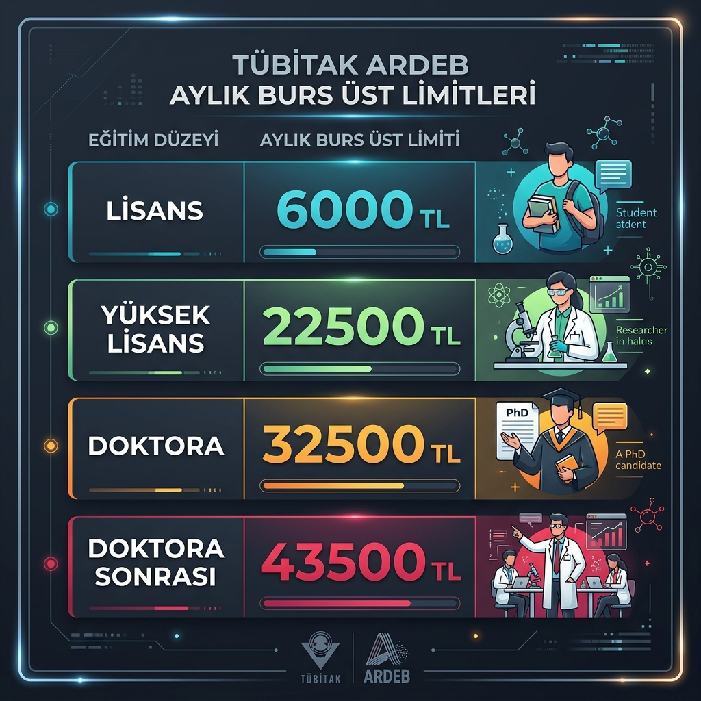
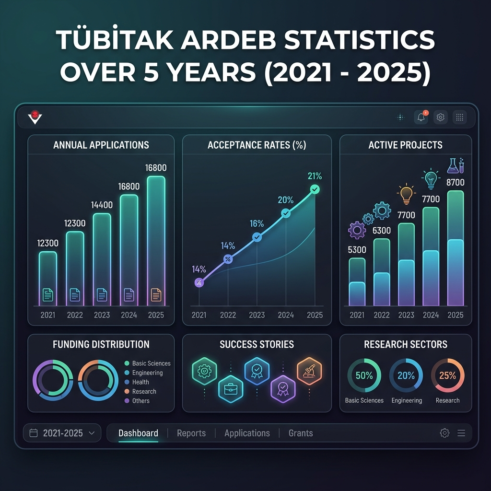

Geçtiğimiz günlerde TÜBİTAK 2209 Lisans Öğrencileri Proje Destek Programı sonuçları açıklandı. Destek almaya hak kazanan tüm öğrenci arkadaşlarımı tebrik ederim. Henüz lisans yıllarındayken bir projenin iş paketlerini kurgulamayı, bütçesini yönetmeyi öğrenmek akademik ve profesyonel gelişim için gerçekten çok kıymetli bir başlangıç.
Kendi öğrencilik yıllarıma dönüp baktığımda, 2017 senesinde bir arkadaşımla birlikte aldığımız 2209-B desteği, yürütücülüğünü üstlendiğim ilk proje olması sebebiyle bende ayrı bir yere sahiptir. Şimdilerde doktora sürecinde yeni bir proje yazımı üzerine çalışırken, güncel olarak akademik çalışmalar için ne tür destek mekanizmaları olduğunu detaylıca araştırma fırsatı buldum. Hem kendi çalışmalarıma yön vermesi hem de bu yola yeni çıkan araştırmacılara bir kolaylık sağlaması amacıyla mevcut imkanları kısaca derlemek istedim.
TÜBİTAK Projeleri
İlk olarak TÜBİTAK tarafından akademik çalışmalara verilen destek programlarını tanıyarak araştırmamıza başlayalım. Ülkemizde akademik araştırma dendiğinde akla ilk gelen ARDEB (Araştırma Destek Programları Başkanlığı) bünyesinde birçok ihtiyaca ve ölçeğe göre farklı destek modelleri bulunuyor.
1001 (Bilimsel ve Teknolojik Araştırma Projeleri): Araştırma projelerinin en temel destek programlarından biri. 36 aya varan sürelerle daha geniş bütçeli çalışmalar hedefleniyor.
1002-A ve 1002-B (Hızlı ve Acil Destek): Kısa süreli, daha küçük bütçeli veya beklenmedik doğa/insan kaynaklı olaylar sonrası hızlı veri toplamayı gerektiren durumlar için can kurtarıcı modüller. Sırayla 12 ay ile 6 aya kadar ve 150.000 TL ile 100.000 TL ye kadar proje bütçeleri desteklenmektedir.
3501 (Kariyer Geliştirme Programı): Kariyerinin henüz başındaki doktoralı bilim insanlarının çalışmalarını teşvik etmeyi amaçlayan çok değerli bir fırsat. Projeler 36 aya kadar ve toplamda 1.500.000 TL’ye kadar desteklenmektedir.
3005 (Sosyal ve Beşeri Bilimlerde Yenilikçi Çözümler): Sosyal ve beşeri bilimler alanındaki çıktı ve etki odaklı araştırmaları destekleyen özel bir program.
Bunlara ek olarak öncelikli alanlara yönelik 1003 ve 1004 gibi büyük ölçekli iş birliği modelleri ile ulusal ihtiyaçlara çözüm arayan 1005 ve 1007 programları da sistemde yer alıyor.
Lisans ve önlisans öğrencilerimiz için ise 2209-A ve sanayi odaklı 2209-B programları, bütçe yönetimi deneyimi kazanmak adına harika birer ilk adım. 12 aya kadar proje süresi planlanabilirken, bütçeleri sırasıyla 12.000 TL ve 16.000 TL.
Proje destek bütçeleri hakkında:
Proje bütçelerinde, makine-teçhizat taleplerinin toplam bütçe ile dengeli olması gözetilir. Altyapı oluşturmaya yönelik olan projeler desteklenmez. Yani masa, sandalye, koltuk gibi malzemeler proje bütçesinden alınamaz.
Araştırma Projelerinde Bursiyer Ücretleri:

Bir araştırma projesindeki en önemli çıktılardan biri de, projede görev alan bursiyerlerin o alanda kendini geliştirmesidir. Bu sebeple akademik projelerin bel kemiği bursiyerler ve araştırmacılarının çokluğudur. Proje desteklerinin büyük bir kalemini oluşturan burslar, 2026 senesi için üstteki tabloda verildiği gibi tespit edilmiştir.
İstatistikler:
Araştırmam sırasında ARDEB'in son 5 yıllık genel destek verilerini de inceleme fırsatı buldum. Bu istatistikler, araştırma ekosistemimizin yönü hakkında bize önemli ipuçları veriyor.

2021 yılında yaklaşık 12.300 olan yıllık proje başvuru sayısı, 2025 yılında neredeyse 16.800'e ulaşmış durumda. Sevindirici bir diğer gelişme ise kabul edilen proje sayılarında. 2021'de 1.800 civarı projeye destek kararı verilirken, bu sayı 2025 yılında 3.500'ün üzerine çıkmış. Kabul oranlarının yaklaşık %14'lerden %21 seviyelerine yükselmesi, nitelikli projelerin destek ihtimallerinin arttığını gösteriyor. Yıl içinde aktif olarak yürütülen proje sayısının 5.300'lerden 8.700'lerin üzerine çıkması, üniversitelerdeki araştırma laboratuvarlarının ve ekiplerinin çok daha aktif çalıştığının somut bir göstergesi. Ancak bu tablo, destek bütçelerinin döviz bazında aynı oranda artmadığını da göstermektedir.
Üniversitelerin Proje Destek Programları
Bilimsel Araştırma Projeleri (BAP) desteklerinin temel amacı, üniversitedeki bilimsel araştırma kalitesini artırmak, teknolojik gelişmelere katkıda bulunmak, genç araştırmacıları desteklemek ve üniversitenin akademik çıktılarını (makale, patent, bildiri vb.) çoğaltmaktır. Bu projeler, ulusal (TÜBİTAK vb.) veya uluslararası (Ufuk Avrupa vb.) daha büyük bütçeli projelere geçiş için bir basamak olarak da değerlendirilir.
Üniversitelerin BAP yönergelerine göre isimler değişse de genel olarak şu proje türleri desteklenir:
- Lisansüstü Tez Projeleri (YL / Doktora): Yüksek lisans ve doktora öğrencilerinin tez çalışmaları için ihtiyaç duyduğu sarf malzeme, hizmet alımı veya cihazları finanse eder. En sık başvurulan türlerden biridir.
- Münferit / Bağımsız Araştırma Projeleri: Öğretim üyelerinin kendi alanlarında yürütecekleri bireysel veya disiplinler arası araştırmalardır.
- Öncelikli Alan Projeleri: Üniversitenin veya ülkenin stratejik olarak belirlediği öncelikli alanlardaki araştırmalara verilen daha yüksek bütçeli desteklerdir.
- Hızlı Destek Projeleri: Daha küçük bütçeli, değerlendirme süreci hızlı olan ve genellikle acil ihtiyaçlar veya pilot çalışmalar için tercih edilen desteklerdir.
- Altyapı Geliştirme Projeleri: Laboratuvarların veya araştırma merkezlerinin ortak kullanımına yönelik cihaz ve donanım alımlarını hedefler.
TÜBİTAK gibi ulusal fonlara kıyasla genellikle kabul edilme oranı daha yüksek ve değerlendirme süreci daha hızlı tamamlanabiliyor. Ancak bütçeleri TÜBİTAK veya AB projelerine göre nispeten daha kısıtlı. Satın alma süreçleri devlet üniversitelerinde resmi mevzuata tabi olduğu için özel sektör dinamizminde hızlı ilerlemeyebilir. Her üniversitenin kendi bütçe durumuna göre kuralları ve destek limitleri farklılık gösteriyor.
Sonuç
Ülkemizde akademik araştırma ekosisteminin gelişmesi, 12. kalkınma planında da her alanda vurgulanmıştır. Bu sebeple, hem akademik çalışma yapan öğrencilerin, hem yürütücülerin, hem de projeleri değerlendiren panelist/hakemlerin motivasyonlarının devam ettirilmesi elzem. Bu sebeple hem fen bilimlerinde hem sosyal bilimlerde desteklenen projelerin artırılması için elimizden geleni yapmamız gerekiyor. Bununla birlikte destek bütçe tutarlarının ve özellikle bursiyer ücretlerinin tekrardan değerlendirilmesi gerektiğini düşünüyorum.
Benim gibi proje yazma hazırlığında olan tüm meslektaşlarıma ve öğrenci arkadaşlarıma çalışmalarında kolaylıklar diliyorum. Süreçle ilgili deneyimlerinizi veya eklemek istediklerinizi yorumlarda paylaşırsanız sevinirim.